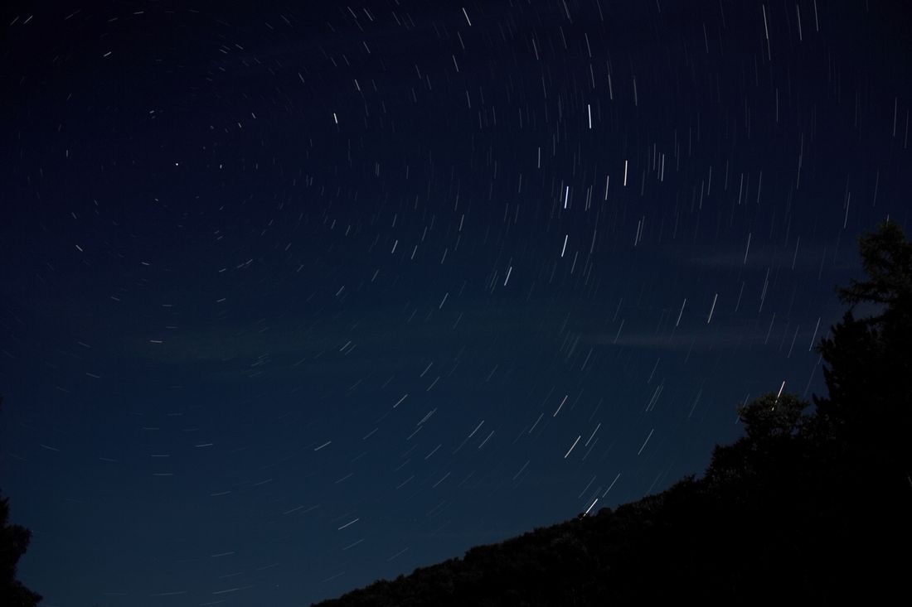

🤲 6. Ünite Konu Özeti: Allah Sevgisi


Allah'ı Tanıyorum
1️⃣ Allah'ı Tanıyorum
Etrafına bakındığında düzenli işleyen bir evren görürsün: Güneş her sabah doğar, mevsimler sırayla birbirini takip eder, bir tohum toprağa düşer ve zamanla koca bir ağaç olur. Peki bu kusursuz düzeni kim kurdu? Bu sorunun cevabı, ünitemizin ilk konusudur: Allah, evreni ve içindeki her şeyi yaratan tek yaratıcıdır.
🗺️ Kavram HaritasıKavram ilişkisi
Bu konunun alt başlıkları ve aralarındaki ilişki
🏠 Günlük Hayattan
Gece gökyüzüne bakıp yıldızların düzenini görmek, Allah’ı eserleriyle tanımanın en kolay yoludur.
🤔 Sıra SendeDüşün ve cevapla
Çevrende Allah’ın yaratma gücünü gösteren bir şey say ve nedenini yaz.
📌 Aklında Kalsın
- Allah birdir, eşi ve benzeri yoktur.
- Allah’ı eserleri ve isimleriyle tanırız.
🎯 MEB Kazanımları
Kaynak: 2024 Türkiye Yüzyılı Maarif Modeli DKAB Öğretim Programı (MEB) — 4. Sınıf 2. Ünite: Allah Sevgisi
- DKAB.4.2.1 — Allah'ın (cc) birliğini ve yüceliğini kavrayabilme: İlgili ayetleri inceleyip hayatına uyarlayarak kendi ifadeleriyle anlatır.
- DKAB.4.2.2 — Allah'ın (cc) kullarına olan sevgisini gözleme dayalı tahmin edebilme: Gözlemleriyle ilişkilendirip çıkarım yapar.
- DKAB.4.2.3 — Dua etme ihtiyacı hakkında düşünebilme: Bu ihtiyacı fark edip önemini kavrayarak günlük hayatına yansıtır.
- DKAB.4.2.4 — Kelime-i tevhit ve kelime-i şehadet hakkında bilgi toplayabilme: Araştırıp bilgi toplayarak doğrular.
- DKAB.4.2.5 — Amentü duasını ve anlamını okuyarak yorumlayabilme: Okuyup hayatına uyarlayarak özümser.
Bu ünite, 2018 DKAB Öğretim Programında ayrı bir ünite olarak yer almıyordu; 2024 Türkiye Yüzyılı Maarif Modeli ile birlikte müfredata yeni eklenen bir ünitedir.
🗺️ Kavram Haritası
Bu ünitenin MEB öğretim programında belirlenen anahtar kavramları, ünite temasıyla bağlantılı olarak aşağıda gösterilmiştir.
Gökyüzündeki yıldızların düzeni, mevsimlerin şaşırmadan birbirini izlemesi, bir çiçeğin açması ya da kalbimizin hiç durmadan atması gibi örnekler, Allah'ın (cc) sonsuz kudretine (güç sahibi olmasına) ve sonsuz ilimine (her şeyi bilmesine) işaret eder. Bunların hiçbiri kendiliğinden ya da tesadüfen olmaz; hepsi Allah'ın (cc) koyduğu bir düzenin parçasıdır.
Allah'ın (cc) bir ve tek olduğuna, O'ndan başka yaratıcı ve ilah bulunmadığına inanmaya tevhit denir. Evrendeki bu kusursuz uyumu fark ettikçe, Allah'ın (cc) birliğini ve yüceliğini daha iyi kavrarız.
🤔 Merak Ettin mi?
İnsan kalbi hiç durmadan günde yaklaşık 100 bin kez atar; bunu hiçbir makine bizim yerimize yapmaz. Bu, Allah'ın (cc) kudretinin küçük ama çok özel bir örneğidir.

Allah Bizi Seviyor
2️⃣ Allah Bizi Seviyor
Allah'ın (cc) sevgisini nasıl anlarız? Etrafımıza baktığımızda bunun çok sayıda işaretini görürüz: sağlığımız, ailemiz, yediğimiz yiyecekler, bize ısı ve ışık veren güneş, nefes aldığımız hava... Bunların hepsi Allah'ın (cc) bize verdiği nimetlerdir.
Allah'ın (cc) Rahman ismi, dünyada iyi kötü ayırmadan bütün canlılara sınırsız merhamet ettiğini anlatır. Rahim ismi ise ahirette özellikle iman edenlere göstereceği özel merhameti ifade eder. Yani Allah'ın (cc) merhameti hem bu dünyada hem de ahirette devam eder.
Bu kadar çok nimete karşı duyduğumuz minnettarlık duygusuna şükür denir. Şükür etmek sadece "teşekkür ederim Allah'ım" demek değildir; nimeti yerinde ve israf etmeden kullanmak da bir şükür biçimidir. Allah'ın (cc) bizi sevmesinin karşılığında bizden istediği şey ise O'nu sevmemiz ve emirlerine gönülden uymamızdır.
❌ Yanlış Bilinenler
❌ Bazıları Allah'ın (cc) sevgisinin sadece belirli, "seçilmiş" kişilere ait olduğunu düşünür.
✅ Allah'ın (cc) Rahman sıfatı, dünyada hiçbir ayrım yapmadan bütün insanlara ve canlılara merhamet ettiğini gösterir.
🌍 Gerçek Hayattan Bir Örnek
Sabah güneşin doğuşunu izleyip "Elhamdülillah, ne güzel bir gün başlıyor" diyerek şükreden bir çocuk, Allah'ın (cc) nimetlerinin farkında olmayı yaşayarak öğrenir.
🏠 Günlük Hayattan
Annenin seni sevmesi de, sağlıklı olman da Allah’ın sana verdiği nimetlerdendir.
🤔 Sıra SendeDüşün ve cevapla
Allah’ın seni sevdiğini gösteren bir nimeti yaz.
📌 Aklında Kalsın
- Allah kullarını sever ve onlara merhamet eder.
- Sevgiye karşılık kulluk ve şükür vardır.

Allah'a Dua Ediyorum
3️⃣ Allah'a Dua Ediyorum
Dua, Allah'a (cc) içten seslenip isteklerimizi, sevinçlerimizi ve sıkıntılarımızı O'na açmaktır. İnsan bazen çok güçlü, bazen de çok güçsüz ve çaresiz hisseder; işte tam böyle anlarda içimizde bir sığınma ve güven arayışı doğar. Dua etme ihtiyacımızın kaynağı da budur.
Dua ederken temiz olmak, samimiyetle yani içtenlikle Allah'a yönelmek ve ellerimizi açarak O'na güvenmek güzel bir dua adabıdır. İslam'da dua için özel bir yer veya an şartı yoktur; dua her an ve her yerde yapılabilir — sevindiğimizde şükür duası, üzüldüğümüzde sabır ve yardım duası ederiz.
💭 Düşün ve Cevapla
Hiç zor bir anında içinden "Allah'ım yardım et" demek geldi mi? Bu duygu sence neden ortaya çıkar?
👨👩👧 Ailemle Yapıyorum
Ailenle birlikte bir akşam, o gün yaşadığınız güzel şeyler için birer şükür duası edin ve neler hissettiğinizi birbirinize anlatın.
🔄 Adım AdımSüreç şeması
Dua ederken
🏠 Günlük Hayattan
Sınavdan önce dua etmek güzeldir; ama dua, çalışmanın yerine geçmez, onu tamamlar.
📌 Aklında Kalsın
- Dua her yerde ve her zaman yapılabilir.
- Dua eden kişi hem ister hem de çabalar.

Kelime-i Tevhit ve Kelime-i Şehadet
4️⃣ Kelime-i Tevhit ve Kelime-i Şehadet
Kelime-i tevhit, "Lâ ilâhe illallah Muhammedün Rasûlullah" cümlesidir. Anlamı: "Allah'tan başka ilah yoktur, Muhammed (sav) O'nun elçisidir." Bu cümle, Allah'ın (cc) birliğine inanmanın en özlü ve en temel ifadesidir.
Kelime-i şehadet ise "Eşhedü en lâ ilâhe illallah ve eşhedü enne Muhammeden abdühû ve rasûlühû" cümlesidir. Anlamı: "Şehadet ederim ki Allah'tan başka ilah yoktur, yine şehadet ederim ki Muhammed (sav) O'nun kulu ve elçisidir." Şehadet kelimesi "tanıklık etme" anlamına gelir.
Bu iki cümle arasında sıkı bir bağ vardır: Kelime-i tevhit Allah'ın (cc) birliğine inandığımızı ifade ederken, kelime-i şehadet bu inancımıza kendi ağzımızla tanıklık etmemizi sağlar. Her ikisi de İslam'a girişin ve imanın en temel ifadeleridir.
🔍 Derinlemesine Düşünelim
Bu ünitede öğrendiklerini derinlemesine değerlendirmek için kendine şu soruları sor:
- Bu bilgi benim hayatımı nasıl etkiler?
- Bu kavram neden önemlidir?
- Günlük yaşamda bunun karşılığı nedir?
⚖️ Ahlaki İkilem — Sen Olsaydın Ne Yapardın?
Arkadaşın "Ben Allah'a inanıyorum ama dua etmeye hiç gerek yok, zaten her şeyi biliyor" diyor. Sen ona ne söylerdin? Dua etmek Allah'ın bilgisiyle çelişir mi?
⚖️ KarşılaştırmaKarşılaştırma görseli
İki temel cümle
Kelime-i tevhit
Kelime-i şehadet
📌 Aklında Kalsın
- Her ikisi de Allah’ın birliğini ve Hz. Muhammed’in elçiliğini bildirir.
- Şehadet, bu inanca tanıklık etmek demektir.

Bir Dua Öğreniyorum: Amentü Duası
5️⃣ Bir Dua Öğreniyorum: Amentü Duası
Amentü duası, İslam'ın altı iman esasını özetleyen çok önemli bir duadır. Bu altı esas şunlardır: Allah'a, meleklerine, kitaplarına, peygamberlerine, ahiret gününe ve kadere iman (inanmak). Melekler Allah'ın (cc) nurdan yarattığı, hiç günah işlemeyen varlıklardır; kitaplar Allah'ın (cc) peygamberlerine gönderdiği ilahi sözlerdir; peygamberler Allah'ın (cc) insanlara gönderdiği elçilerdir; ahiret ölümden sonra başlayacak sonsuz hayattır; kader ise Allah'ın (cc) her şeyi ezelden bilip takdir etmesidir.
Amentü duasının sonunda kelime-i şehadet getirilerek Allah'tan başka ilah olmadığına ve Hz. Muhammed'in (sav) O'nun elçisi olduğuna tanıklık edilir. Böylece Amentü duası, tevhit ve şehadet inancını da içine alan kapsamlı bir dua olur. Aşağıda duanın okunuşunu ve anlamını satır satır bulabilirsin:
Bu duayı okuyup anlamını düşünmek, imanımızın temel esaslarını daha iyi kavramamızı ve hayatımıza yansıtmamızı sağlar.
✅ Kendimi Değerlendiriyorum
🌍 Hayatta Dene
Bugünün görevi: Bugün etrafındaki bir canlıya (bir bitkiye su ver, bir hayvana iyi davran) Allah'ın yarattığı bir varlık olduğunu düşünerek özen göster.
📌 Aklında Kalsın
- Âmentü duası imanın altı esasını sıralar.
- Duayı anlamıyla öğrenmek imanı bilinçli hâle getirir.
🖥️ Ünite Sunumu
4. SINIF — 6. ÜNİTE
Allah Sevgisi
Din Kültürü ve Ahlak Bilgisi
Ayşe Yazıcı
🎯 Bu Ünitede Neler Öğreneceğiz?
- Allah'ı Tanıyorum
- Allah Bizi Seviyor
- Allah'a Dua Ediyorum
- Kelime-i Tevhit ve Kelime-i Şehadet
- Bir Dua Öğreniyorum: Amentü Duası
📌 Allah'ı Tanıyorum (1/2)
- Evreni ve içindeki her şeyi yaratan tek yaratıcı Allah'tır (cc).
- Gökyüzündeki düzen, mevsimlerin birbirini takip etmesi, bir çiçeğin açması, kalbimizin hiç durmadan atması Allah'ın (cc) varlığının ve gücünün somut işaretleridir.
- Allah (cc) sonsuz güç (kudret) ve sonsuz bilgiye (ilim) sahiptir; hiçbir şey O'nun bilgisi dışında değildir.
📌 Allah'ı Tanıyorum (2/2)
- Evrendeki kusursuz düzeni gördükçe, bunun kendiliğinden değil, sonsuz kudret sahibi bir yaratıcı tarafından planlandığını anlarız.
- Allah'ın (cc) bir ve tek olduğuna, O'ndan başka yaratıcı bulunmadığına inanmaya tevhit denir.
🤔 MERAK ETTİN Mİ?
İnsan kalbi, hiç durmadan ortalama günde yaklaşık 100 bin kez atar — bunu hiçbir makine bizim için yapmaz; bu, Allah'ın (cc) kudretinin küçük bir örneğidir.
📌 Allah Bizi Seviyor (1/2)
- Allah'ın (cc) Rahman ismi, dünyada iyi kötü ayırmadan bütün canlılara sınırsız merhamet ettiğini anlatır.
- Allah'ın (cc) Rahim ismi ise ahirette özellikle iman edenlere göstereceği özel merhameti anlatır.
- Allah (cc) bize sağlık, aile, yiyecek, güneş, hava gibi sayamayacağımız kadar çok nimet vermiştir.
📌 Allah Bizi Seviyor (2/2)
- Bu nimetlere karşı duyduğumuz minnettarlığa şükür denir; şükür hem dille söylemek hem de nimeti yerinde kullanmakla gösterilir.
- Allah'ın (cc) bizi sevmesinin karşılığında bizden istediği şey, O'nu sevmemiz ve emirlerine gönülden uymamızdır.
❌ YANLIŞ BİLİNENLER
❌ Bazıları Allah'ın (cc) sevgisini sadece belirli, "seçilmiş" kişilere ait sanır.
✅ Allah'ın (cc) Rahman sıfatı, dünyada hiçbir ayrım yapmadan bütün insanlara ve canlılara merhamet ettiğini gösterir.
🌍 GERÇEK HAYATTAN BİR ÖRNEK
Sabah güneşin doğuşunu izleyip "Elhamdülillah, ne güzel bir gün başlıyor" diyerek şükreden bir çocuk, Allah'ın (cc) nimetlerinin farkında olmayı yaşayarak öğrenir.
📌 Allah'a Dua Ediyorum (1/2)
- Dua, Allah'a (cc) içten seslenip isteklerimizi, sevinçlerimizi ve sıkıntılarımızı O'na açmaktır.
- İnsan, güçsüz ve çaresiz hissettiği anlarda içinde bir sığınma ve güven arayışı duyar; bu duygu dua etme ihtiyacının kaynağıdır.
💭 DÜŞÜN VE CEVAPLA
Hiç zor bir anında içinden "Allah'ım yardım et" demek geldi mi? Bu duygu sence neden ortaya çıkar?
📌 Allah'a Dua Ediyorum (2/2)
- Dua ederken temiz olmak, samimi olmak ve ellerimizi açarak içtenlikle Allah'a yönelmek güzel bir dua adabıdır.
- İslam'da dua için özel bir yer veya an şartı yoktur; dua her an ve her yerde yapılabilir.
📌 Kelime-i Tevhit ve Kelime-i Şehadet (1/2)
- Kelime-i tevhit, "Lâ ilâhe illallah Muhammedün Rasûlullah" cümlesidir; anlamı "Allah'tan başka ilah yoktur, Muhammed O'nun elçisidir."
- Bu cümle, Allah'ın (cc) birliğine inanmanın en özlü ifadesidir.
📌 Kelime-i Tevhit ve Kelime-i Şehadet (2/2)
- Kelime-i şehadet, "Eşhedü en lâ ilâhe illallah ve eşhedü enne Muhammeden abdühû ve rasûlühû" cümlesidir; bu cümleyle Allah'tan başka ilah olmadığına ve Hz. Muhammed'in (sav) O'nun kulu ve elçisi olduğuna tanıklık ederiz.
- Bu iki cümle, İslam'a girişin ve imanın en temel ifadeleridir.
🔍 DERİNLEMESİNE DÜŞÜNELİM
- Bu bilgi benim hayatımı nasıl etkiler?
- Bu kavram neden önemlidir?
- Günlük yaşamda bunun karşılığı nedir?
📌 Bir Dua Öğreniyorum: Amentü Duası (1/2)
- Amentü duası, İslam'ın altı iman esasını özetleyen önemli bir duadır: Allah'a, meleklerine, kitaplarına, peygamberlerine, ahiret gününe ve kadere iman.
- Bu duayı okuyup anlamını düşünmek, imanımızın temel esaslarını daha iyi kavramamızı sağlar.
📌 Bir Dua Öğreniyorum: Amentü Duası (2/2)
- Amentü duasının sonunda kelime-i şehadet getirilerek Allah'tan başka ilah olmadığına ve Hz. Muhammed'in (sav) O'nun elçisi olduğuna tanıklık edilir.
- Böylece Amentü duası, tevhit ve şehadet inancını da içine alan kapsamlı bir dua olur.
✅ KENDİMİ DEĞERLENDİRİYORUM
- ☐ Allah'ın (cc) varlığının evrendeki işaretlerine örnek verebilirim.
- ☐ Allah'ın (cc) Rahman ve Rahim isimlerinin anlamlarını açıklayabilirim.
- ☐ Dua etmenin önemini ve dua adabını anlatabilirim.
- ☐ Kelime-i tevhit ile kelime-i şehadetin anlamlarını söyleyebilirim.
- ☐ Amentü duasını okuyup altı iman esasını sayabilirim.
🔑 Önemli Kavramlar (1/2)
🔑 Önemli Kavramlar (2/2)
📖 AYETLERLE DÜŞÜNELİM
"De ki: O, Allah'tır, bir tektir."
— İhlas suresi, 1. ayet
📖 AYETLERLE DÜŞÜNELİM
"Kullarım beni senden sorduğunda, (bilsinler ki) ben çok yakınım. Bana dua ettiğinde dua edenin duasına karşılık veririm."
— Bakara suresi, 186. ayet
🎬 KONUYLA İLGİLİ VİDEO
İmanın Şartları - Nussa ve Rarra
📝 Ünite Özeti
- Hadis-i Şerif: "İman; Allah'a, meleklerine, kitaplarına, peygamberlerine, ahiret gününe inanman; hayrı ve şerriyle kadere de inanmandır."
- (Müslim, İman, 1 — Cibril Hadisi)
Dinlediğiniz İçin Teşekkürler
Başarılar dilerim.
Ayşe Yazıcı — Din Kültürü ve Ahlak Bilgisi Öğretmeni